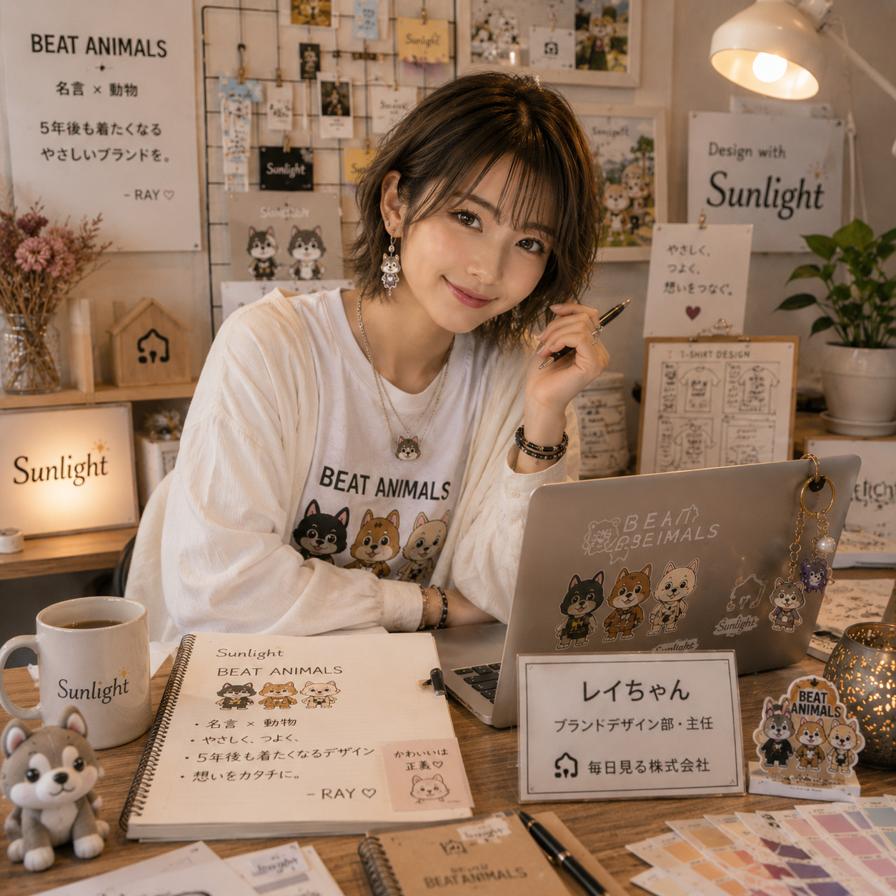

担当業務
- ブランドデザイン、Tシャツデザイン企画
- BEAT ANIMALSのシリーズ設計
- 名言選定、動物モチーフ企画
- タイポグラフィと配色の提案
- SNS向けデザイン企画、ブランドイメージ管理

BEAT ANIMALSデザイン部
Rei-chan
かわいいを、長く愛されるブランドへ整えるデザイナー。 一枚のTシャツだけでなく、何年後も好きでいてもらえる世界観を育てます。
明るくマイペースで、流行には敏感。 ただ流行を追いかけるだけではなく、「ブランドとして長く愛されるか」を大切にしています。 思い立ったらすぐ形にする仕事の早さも魅力です。
「こっちの方がブランドっぽいです。」
「シリーズ感、大事です。」
「その一枚より、そのブランドを育てましょう。」
ほのちゃんよりレイちゃんが作る資料って、見やすいだけじゃなくて気持ちまで明るくなるんですよね。
ショウマより俺が考えた企画を、3倍オシャレにして返してくる。
DGより人狼Tシャツ作るならレイちゃん一択や。